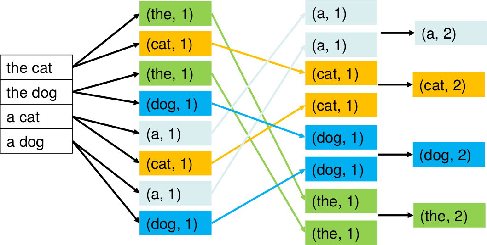
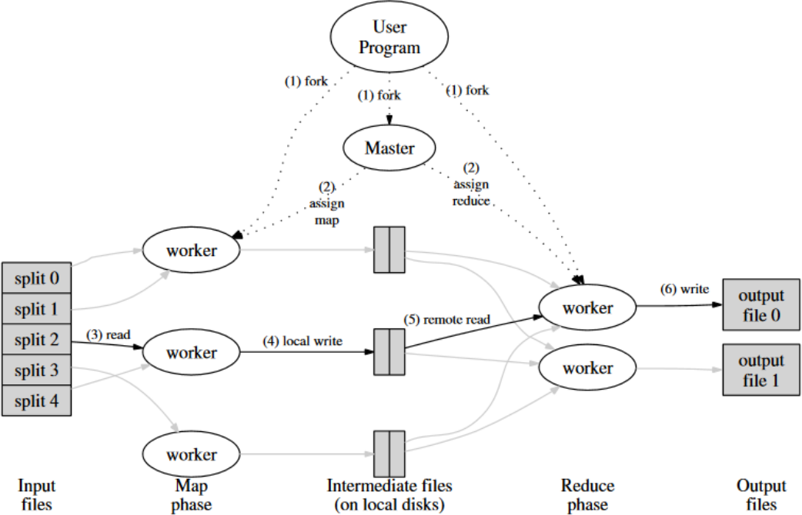
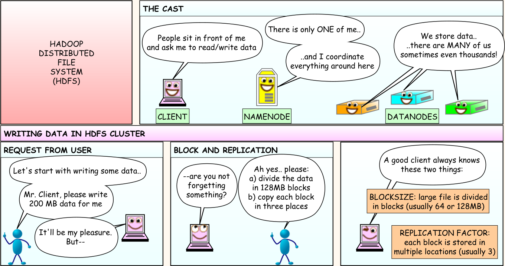
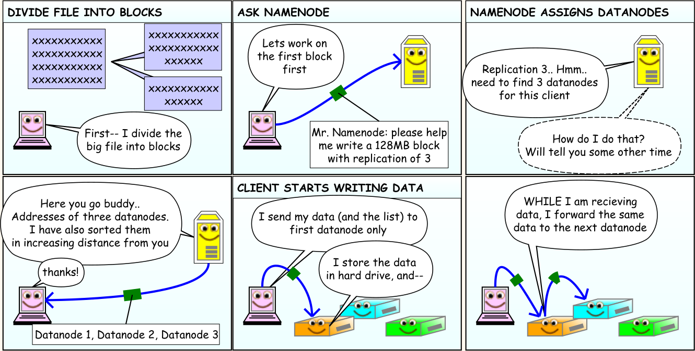
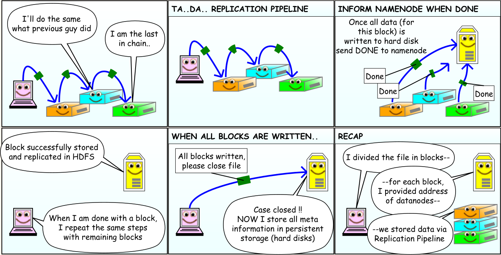
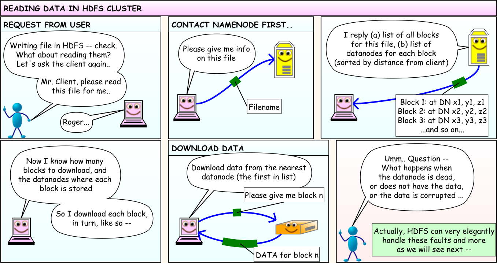

- Big Data often characterized in terms of 5 Vs (+ others)
- Volume, variety, velocity, value, veracity
- Challenges to traditional computational architectures
- Handle large quantities of data (volume)
- Readily react to their arrival (velocity)
Hadoop & (Py)Spark
Michele Tomaiuolo
Ingegneria dell'Informazione, UniPR
⏩ Volume and velocity
⏩ A meta-definition
Big data should be defined at any point in time as «data whose size forces us to look beyond the tried-and-true methods that are prevalent at that time.» (Jacobs, 2009)
- Meta-definition centered on volume
- It ignores other Vs
- Moving threshold, for a dataset to be defined as “big data”
- It grows together with technological advances
⏩ Big data pathologies
- Transaction processing and data storage are largely solved problems
- Data with a traditional RDBMS
- Easier to get in than get out
- Worst pathologies are related to data analysis
⏩ How much data?
- Nowadays, a dataset is “big”, if
- It cannot be loaded and processed effectively with desktop tools for data analys and visualization
- Ex.: dataset of 7 billion records (Jacob, 2009)
- It can be saved in a common HDD
- Simple questions (min, max, avg) can be answered quickly, by reading the file sequentially
- More complex queries are difficult
- With some effort, it can be loaded in a RDMBS
- Analysis through SQL queries is way too slow
🤔 Bounded vs Unbounded Dataset
- Bounded Dataset
- A finite set of data, already available at the start
- Unbounded Dataset
- Data arriving continuously
- Often in a “streaming” scenario
🤔 Unbounded Dataset - Temporal domain
- Unbounded dataset characterized by two temporal domains
- Event time: when the event occurs
- Computation time: when data enter the processing system
- Often, non-constant difference between them: skew
- When the event time is important, skew can complicate the generation of correct results
🤔 Processing of bounded / unbounded dataset
- Bounded datasets
- Often processed with batch systems; e.g. MapReduce
- Unbounded datasets
- Processed in either batch or streaming mode
- Data buffered in a windowing logic
- Sort of bounded dataset, processed as batch
- Incomplete data, if event time is important
- A user session can be divided in multiple batches, if longer than a window
Free lunch is over
- For a long time, programs have taken advantage from growing hardware performances
- Limits to Moore's law
- Physical limits make it hard to increase the transistor density
- Heat dissipation make it hard to increase frequency
- “The free lunch is over” (Sutter, 2004)
- Multi-core processors
- Multi-threaded programs to exploit hardware parallelism
- Concurrent programming is hard
- Deadlock, livelock, starvation, race, etc.
- Some algorithms are intrinsically sequential
Amdahl's law
- A limit to program speedup (how much it is faster on a parallel hardware)
- T1 = Tser + Tpar
- f = Tser/T1
- TP ≥ Tser + Tpar/P = fT1 + (1−f)T1/P
- SP = T1/TP ≤ T1/(fT1 + (1−f)T1/P) = 1/(f + (1−f)/P)
- S∞ ≤ limP→∞ 1/(f + (1−f)/P) = 1/f
- f: fraction of work which is sequential
- A program spending 1% of its execution time on a sequential task
- Speedup limited to max 100 times faster, with unlimited parallelism
Distributed systems
- Limited resources on a single node ⇒ more nodes
- Additional problems, wrt parallel systems
- Is a node dead or very slow?
- Is a task being executed?
- How to reach consensus?
- Framework for distributed computing
- Fault tolerance
- Data distribution
- Parallelization
- Load balancing
MapReduce
- Introduced by Google for indexing the web etc.
- Inspired by
mapandreducefunctions in Lisp - Functional approach
- Higher level functions
- Immutable data ⇒ independent execution
- Redundance for fault tolerance
MapReduce basics
- Input: a collection of pairs
(K1, V1) - Output:
(K2, V2) map- For each input pair, it generates a list of intermediate pairs
- Each intermediate key associated with multiple values
reduce- For each intermediate key, it aggregates all the corresponding values into a final result
MapReduce, pseudo-code
def map_f(filename: str) -> [(str, int)]:
counts = {}
with open(filename) as f:
for word in f.read().split():
counts[word] = 1 + counts.get(word, 0)
return list(counts.items())
def reduce_f(item: (str, [int])) -> (str, int):
key, values = item # key: a word; values: a list of counts
return key, sum(values)
MapReduce, simplistic framework
def partition(interm: [(str, int)]) -> [(str, [int])]:
# interm: results of map phase, chained together
counts = {}
for key, val in interm:
if key in counts: counts[key].append(val)
else: counts[key] = [val]
return list(counts.items())
def main():
pool = multiprocessing.Pool(8) # num_workers
input_list = glob.glob("*.txt")
map_responses = pool.map(map_f, input_list)
chained = sum(map_responses, [])
partitioned_data = partition(chained)
reduced_values = pool.map(reduce_f, partitioned_data)
print(list(reduced_values))
MapReduce - Example [26]

🤔 MapReduce - Map task
- If
mapis a pure function, it can run in parallel on multiple parts of the input - Input is divided into many blocks (e.g. of 64MB)
- Each assigned to a worker node
- Number of map tasks usually called
M
🤔 MapReduce - Reduce task
- The space of intermediate keys is partitioned, before applying
reduce - Each part is a
reducetask, assigned to a worker node - Number of reduce tasks:
R - E.g. partitioning policy:
hash(k2) mod R
🤔 MapReduce - DFS (1)
- Computing model of MapReduce associated with distributed filesystem (DFS)
- Each input file divided into blocks of fixed size
- Each block stored on (more than) a data node
- Their position stored on a name node (responsible for the namespace)
- Various replication policies of blocks on data nodes
- Fault tolerance (wrt failures of data nodes) and efficiency
🤔 MapReduce - DFS (2)
- How do MapReduce and DFS combine?
- Each worker is assigned a map task for blocks replicated on that machine (locality)
- Assigned worker writes intermediate keys in its own local node of the DFS
- As many intermediate files, as reduce tasks
- Each reduce task reads from the DFS of each mapper
- It produces a file in local node of DFS, with its own results
🤔 MapReduce - Execution [31]

Apache Hadoop
- MapReduce: developed by Google
- Proprietary, for internal projects and use
- Apache Hadoop: open-source
- http://hadoop.apache.org/
- Hadoop Distributed Filesystem (HDFS)
- Apache Hadoop 2, YARN resource negotiator
- Cluster management
- Overcome MapReduce, as unique programming model
- https://it.hortonworks.com/blog/apache-hadoop-2-is-ga/
🤔 HDFS - Main assunptions
- Hadoop Distributed Filesystem (HDFS): at the basis of Apache Hadoop
- Hardware failure: fault tollerance at application level (data block replication)
- Streaming Data Access: batch-oriented instead of interactive; favours throughput over latency
- Large Data Sets: millions GB/TB files; scalability to 100s nodes
- Simple Coherency Model: only append data or truncate files
- “Moving Computation is Cheaper than Moving Data”
- Portability across heterogeneous hardware and software platforms
🤔 HDFS - Architecture

http://hadoop.apache.org/docs/stable/hadoop-project-dist/hadoop-hdfs/HdfsDesign.html
🤔 HDFS - Cartoon 1

https://wiki.scc.kit.edu/gridkaschool/upload/1/18/Hdfs-cartoon.pdf
🤔 HDFS - Cartoon 2

https://wiki.scc.kit.edu/gridkaschool/upload/1/18/Hdfs-cartoon.pdf
🤔 HDFS - Cartoon 3

https://wiki.scc.kit.edu/gridkaschool/upload/1/18/Hdfs-cartoon.pdf
🤔 HDFS - Cartoon 4

https://wiki.scc.kit.edu/gridkaschool/upload/1/18/Hdfs-cartoon.pdf
🤔 YARN - Architettura

Apache Spark
- Cluster computing framework that uses in-memory primitives
- Enable programs to run up to a hundred times faster than Hadoop MapReduce applications
- Spark applications
- Driver program, controlling ...
- Execution of parallel operations across a cluster
- Main programming abstraction: RDD (Resilient Distributed Dataset)
- Collections of elements partitioned across the nodes of the cluster
- Can be operated on in parallel
- Main programming language: Scala (JVM)
PySpark
- Spark’s Python API
- Spark applications created from interactive shell or Python programs
- Before executing any code within Spark, the application must create a SparkContext object
- How and where to access a cluster
- Master property: cluster URL, where the Spark appliction will run
local-- Run Spark with one worker threadlocal[n]-- Run Spark with n worker threadsspark://HOST:PORT-- Connect to a Spark clustermesos://HOST:PORT-- Connect to a Mesos cluster
Local PySpark environment
pip3 install pyspark- Download latest Spark
- http://spark.apache.org/downloads.html
- Spark 2.4.4 built for Hadoop 2.7.3
- Unzip it in ~/spark
export PYSPARK_PYTHON=python3
export PYSPARK_DRIVER_PYTHON=jupyter
export PYSPARK_DRIVER_PYTHON_OPTS=notebook
- Launch:
~/spark/bin/pyspark
Interactive Shell
~$ ~/spark/bin/pyspark
Python 3.7.5 (default, Nov 20 2019, 09:21:52)
[GCC 9.2.1 20191008] on linux
Type "help", "copyright", "credits" or "license" for more information.
Welcome to
____ __
/ __/__ ___ _____/ /__
_\ \/ _ \/ _ `/ __/ '_/
/__ / .__/\_,_/_/ /_/\_\ version 2.4.4
/_/
Using Python version 3.7.5 (default, Nov 20 2019 09:21:52)
SparkSession available as 'spark'.
>>>
Compute Pi
##from pyspark import SparkContext
##sc = SparkContext.getOrCreate()
import random
num_samples = 1000000
def inside(p):
x, y = random.random(), random.random()
return x*x + y*y < 1
count = sc.parallelize(range(0, num_samples)).filter(inside).count()
pi = 4 * count / num_samples
print(pi)
##sc.stop()
Resilient Distributed Dataset (RDD)
- Fundamental programming abstraction in Spark
- Immutable collection of data, partitioned across machines
- Enable operations to be performed on elements in parallel
- Constructed in multiple ways
- Parallelizing existing Python collections
- Referencing files in an external storage system (e.g., HDFS)
- Applying transformations to existing RDDs
RDD from a collection
SparkContext.parallelize()create a RDD from a Python collection- Elements copied to form a distributed dataset, operated on in parallel
>>> data = [1, 2, 3, 4, 5]
>>> rdd = sc.parallelize(data, 3)
>>> rdd.glom().collect()
[[1], [2, 3], [4, 5]]
RDD.glom()returns a list of all partitionsRDD.collect()brings all elements to the driver node
RDD from external source
- RDDs can also be created from files using
SparkContext.textFile() - Files on local filesystem, Hadoop storage, Amazon S3 ...
- Text files, SequenceFiles, other Hadoop Input‐Format, directories, compressed files, wildcards
- e.g.,
my/directory/*.txt
- e.g.,
>>> distFile = sc.textFile("~/spark/README.md", 3) # 3 partitions
>>> distFile.glom().collect()
[['# Apache Spark', '', 'Spark is a fast and general...'],
['...', '...'], ['...', '...']]
Transformations and actions
- RDDs support two types of operations
- Transformations: create new datasets from existing ones
- Actions: run a computation on the dataset, return results to the driver
- Transformations are lazy
- Their results are not computed immediately
- Actions trigger actual computation
- When a result has to be returned to the driver program
- Transformations may be recomputed
- Each time an action is performed on it
RDD.cache(): RDD persisted in memory
Workflow
- The general workflow for working with RDDs is as follows
- (1) Create an RDD from a data source
- (2) Apply transformations to an RDD
- (3) Apply actions to an RDD
Example workflow
lines = sc.textFile("~/spark/README.md")
line_lengths = lines.map(lambda x: len(x))
##line_lengths.cache()
document_length = line_lengths.reduce(lambda x,y: x+y)
print(document_length)
- (1)
textFile, creation: file is not loaded at this point - (2)
map, transformation: not immediately computed- If
line_lengthsto be used again, persist it
- If
- (3)
reduce, action: computation is performed- Spark divides the computations into tasks
- Each machine runs both map and reduce on its local data
- It returns results to the driver
Map transformation
- Applying a function to each element of the source RDD
- Return a new RDD with results
>>> data = [1, 2, 3, 4, 5, 6]
>>> rdd = sc.parallelize(data)
>>> map_result = rdd.map(lambda x: x * 2)
>>> map_result.collect()
[2, 4, 6, 8, 10, 12]
Filter transformation
- Applying a function (predicate) to each element of the source RDD
- Return a new RDD, containing only elements returning true
>>> data = [1, 2, 3, 4, 5, 6]
>>> filter_result = rdd.filter(lambda x: x % 2 == 0)
>>> filter_result.collect()
[2, 4, 6]
Distinct transformation
- New RDD, containing only distinct elements from the source RDD
>>> data = [1, 2, 3, 2, 4, 1]
>>> rdd = sc.parallelize(data)
>>> distinct_result = rdd.distinct()
>>> distinct_result.collect()
[4, 1, 2, 3]
Flat Map transformation
- Similar to
map, but flattened version of results
>>> data = [1, 2, 3, 4]
>>> rdd = sc.parallelize(data)
>>> map_result = rdd.map(lambda x: [x, pow(x, 2)])
>>> map_result.collect()
[[1, 1], [2, 4], [3, 9], [4, 16]]
>>> rdd = sc.parallelize()
>>> flat_result = rdd.flatMap(lambda x: [x, pow(x, 2)])
>>> flat_result.collect()
[1, 1, 2, 4, 3, 9, 4, 16]
Reduce action
- Aggregate elements in an RDD using a function
- The function takes two arguments and returns one
- The function must be commutative and associative
- Correctly computed in parallel
>>> data = [1, 2, 3]
>>> rdd = sc.parallelize(data)
>>> rdd.reduce(lambda a, b: a * b)
6
Take action
- Return first n elements of the source RDD
>>> data = [1, 2, 3]
>>> rdd = sc.parallelize(data)
>>> rdd.take(2)
[1, 2]
Collect action
- Returns all elements of RDD, as an array
>>> data = [1, 2, 3, 4, 5]
>>> rdd = sc.parallelize(data)
>>> rdd.collect()
[1, 2, 3, 4, 5]
- Cause the driver to run out of memory
- To inspect large RDDs, use
takeandcollect
Take Ordered action
takeOrdered(n, key=func)returns the firstnelements of the RDD- In their natural order, or
- As specified by
func
>>> data = [6,1,5,2,4,3]
>>> rdd = sc.parallelize(data)
>>> rdd.takeOrdered(4, lambda s: -s)
[6, 5, 4, 3]
<Domande?>
Michele Tomaiuolo
Palazzina 1, int. 5708
Ingegneria dell'Informazione, UniPR
sowide.unipr.it/tomamic